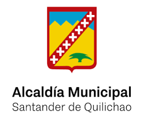

Trabajando juntos por el desarrollo y bienestar de nuestras comunidades en Santander de Quilichao.
Ver Noticias RecientesCon gran alegría se inauguró el nuevo salón comunal, un espacio para el encuentro y la organización comunitaria.
Leer MásCampaña exitosa de salud animal gracias a la colaboración de la comunidad y la secretaría de salud.
Leer MásParticipamos activamente en la búsqueda de soluciones para mejorar la seguridad en nuestros territorios.
Leer MásÚnete a nuestra iniciativa para sembrar árboles y proteger nuestros recursos naturales.
 ParticiparAyúdanos a mantener nuestro municipio limpio y fomenta el reciclaje en tu hogar.
Más InformaciónSintoniza la voz de nuestra comunidad. Noticias, música y programas de interés local.
Si el reproductor no funciona, puedes escucharla en su sitio web:
Ir a Uma Kiwe Estéreo¿Tienes alguna pregunta o sugerencia? ¡Estamos aquí para escucharte!
Email: info@asocomunalquilichao.org
Teléfono: +57 3XX XXX XXXX
Dirección: [Dirección de la Sede]
Regístrate para recibir nuestras noticias y participar en las actividades de ASOCOMUNAL.
Nota: Este formulario es solo para demostración. Un sistema real de registro requiere un backend.